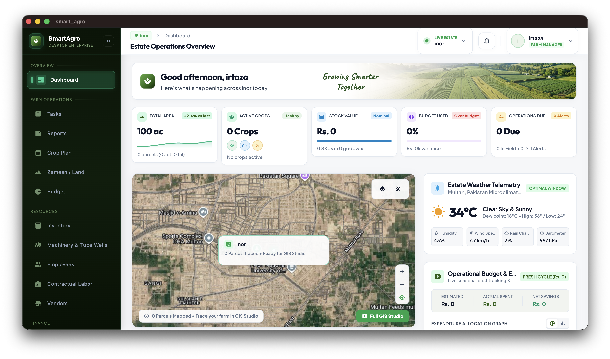
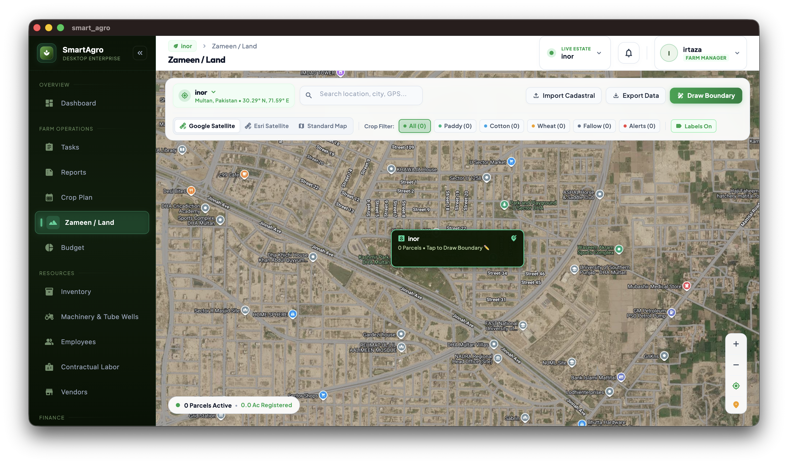
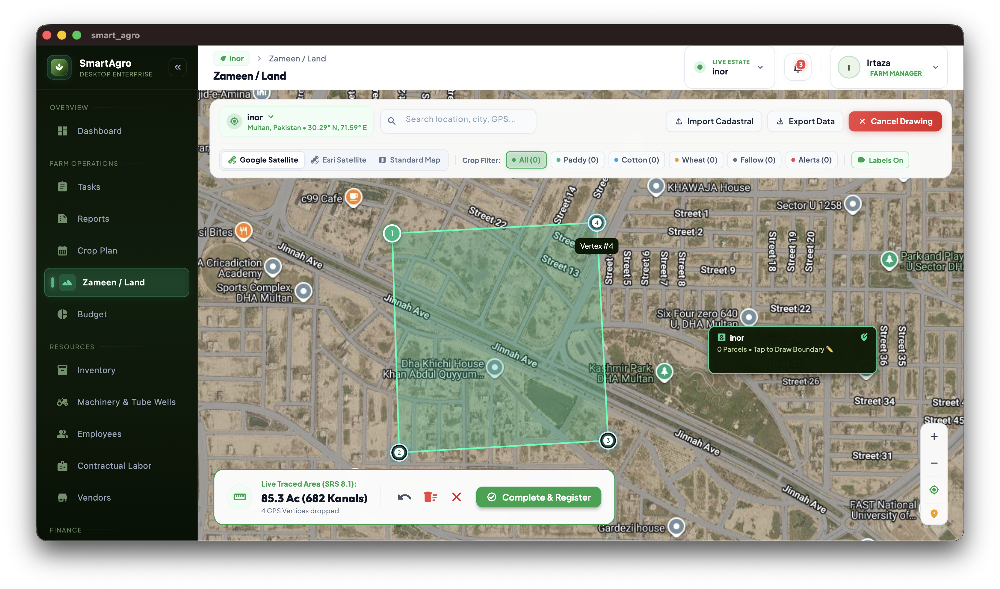
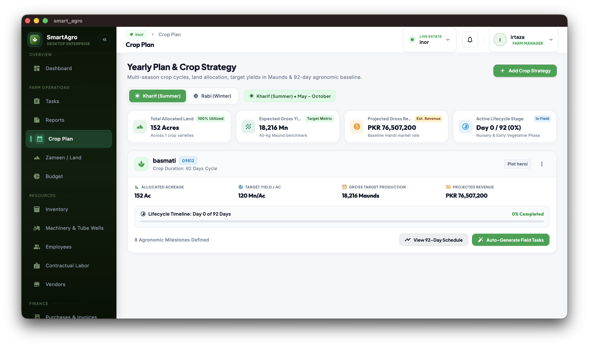
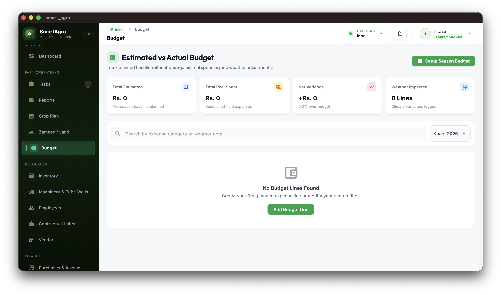
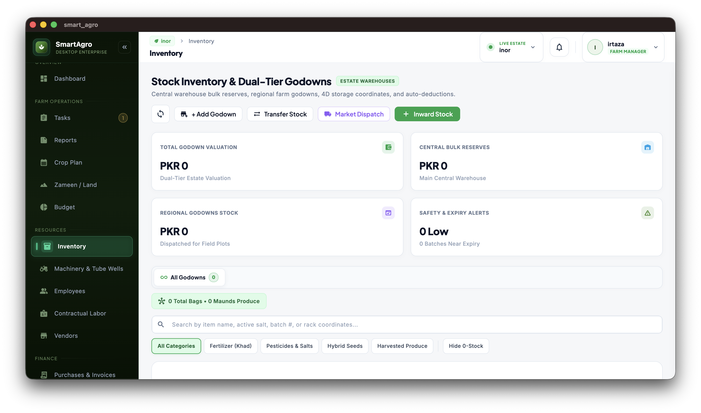
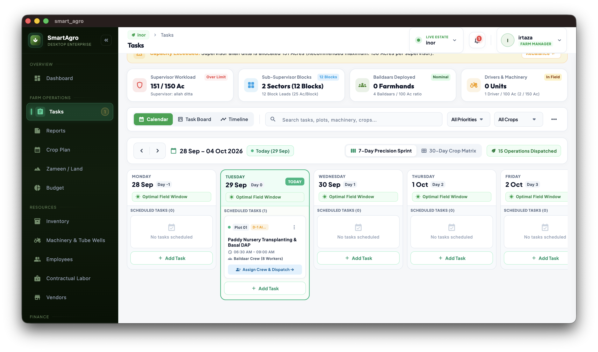
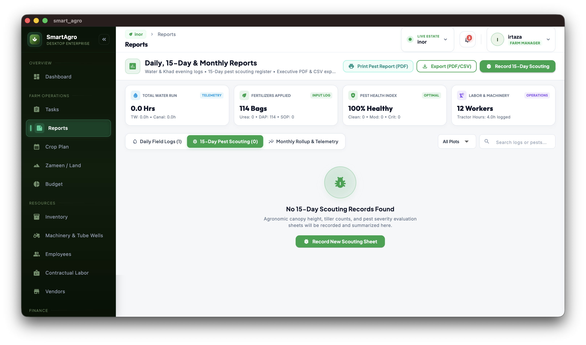
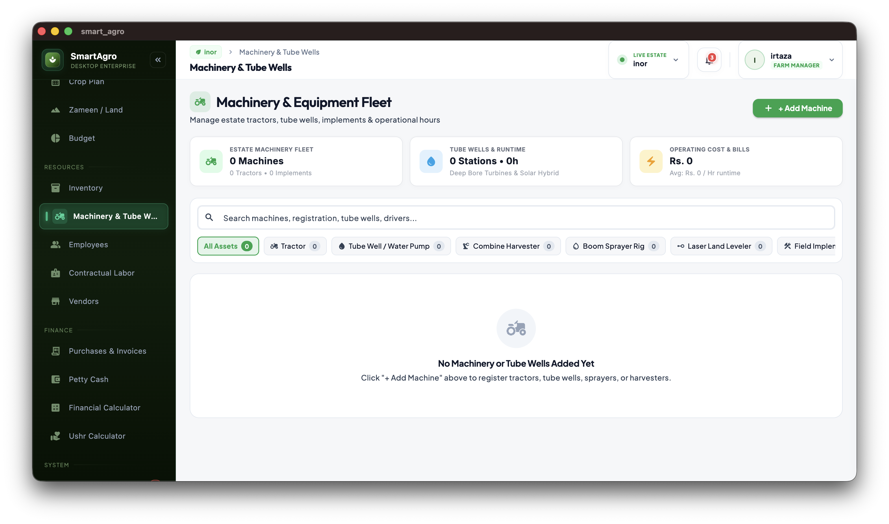
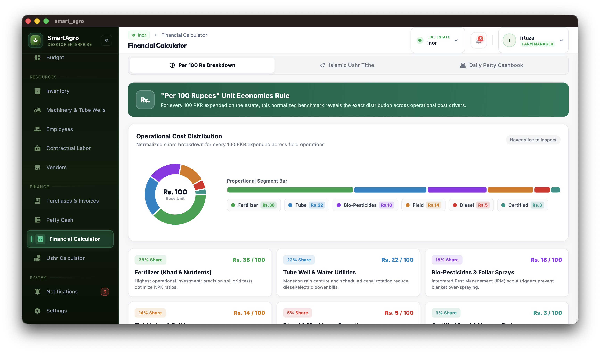

Flutter Desktop
Dart
GIS & Satellite Maps
Clean Architecture
State Management
Print & PDF Engine
Weather Telemetry
Overview
SmartAgro is a full-scale Flutter Desktop Enterprise platform engineered for managing large agricultural estates from one unified command center. It brings together live GIS satellite land mapping, crop strategy planning, field task execution, godown inventory, workforce payroll, machinery tracking, and agricultural finance.
Designed for multi-estate farm managers, SmartAgro replaces fragmented spreadsheets and paper ledgers with real-time operational telemetry, verifiable receipts, and printable reports across every acre.
The Challenge
Managing multi-location agricultural estates involves dozens of interdependent workflows — tracing parcel boundaries, tracking seasonal crop plans, dispatching field crews, verifying chemical & seed stock across godowns, and reconciling daily-wage labor, petty cash, and Ushr calculations. Doing this manually causes budget overruns, untracked inventory loss, and delayed field operations.
Core Modules Built
GIS Studio & Crop Operations
Zameen / Land GIS Studio: Switch between Google Satellite, Esri Satellite & Standard maps to draw plot boundaries and sub-lanes.
Multi-Estate Switching: Seamlessly add and switch between multiple farm estates and geographic locations.
Crop Planning & Tasks: Build seasonal crop strategies, push plans directly to field tasks, assign crews, and log pest scouting.
Weather Telemetry: Live estate microclimate metrics including temperature, humidity, wind speed, and barometer readings.
Resources, HR & Farm Finance
Godowns & Inventory: Manage warehouses, inward stock, chemical registries, vendor accounts, and verifiable printable invoices.
Machinery & Tube Wells: Register and monitor heavy farm equipment and irrigation assets.
Workforce Management: Separate workflows for permanent employees and contractual daily-wage labor.
Finance & Ushr Engine: Seasonal farm budgeting, petty cash ledger, financial calculator, and built-in Ushr calculator.
Desktop Interface Preview










01 / 10 — Estate Operations Dashboard